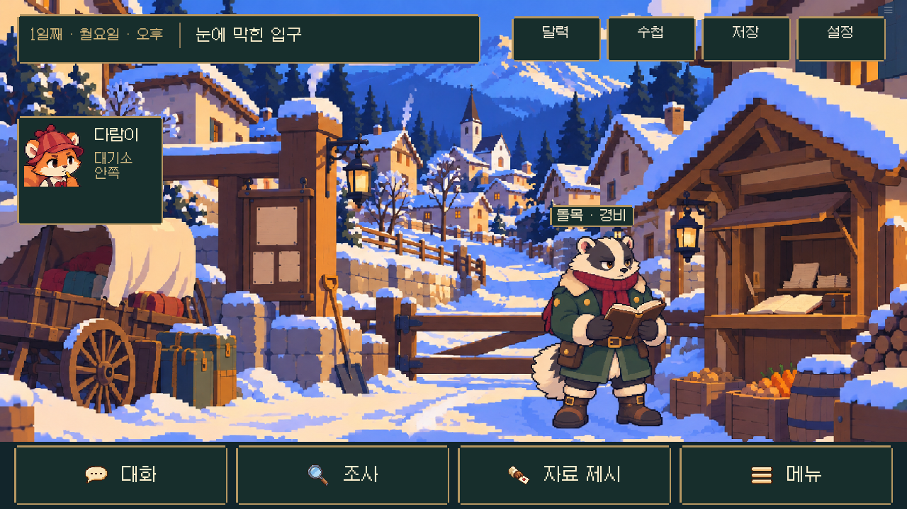
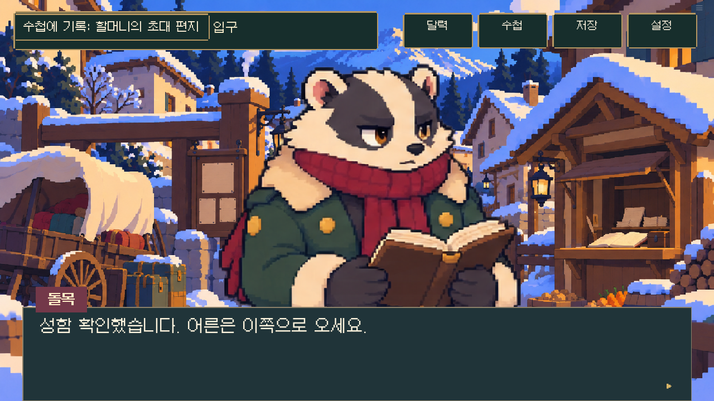
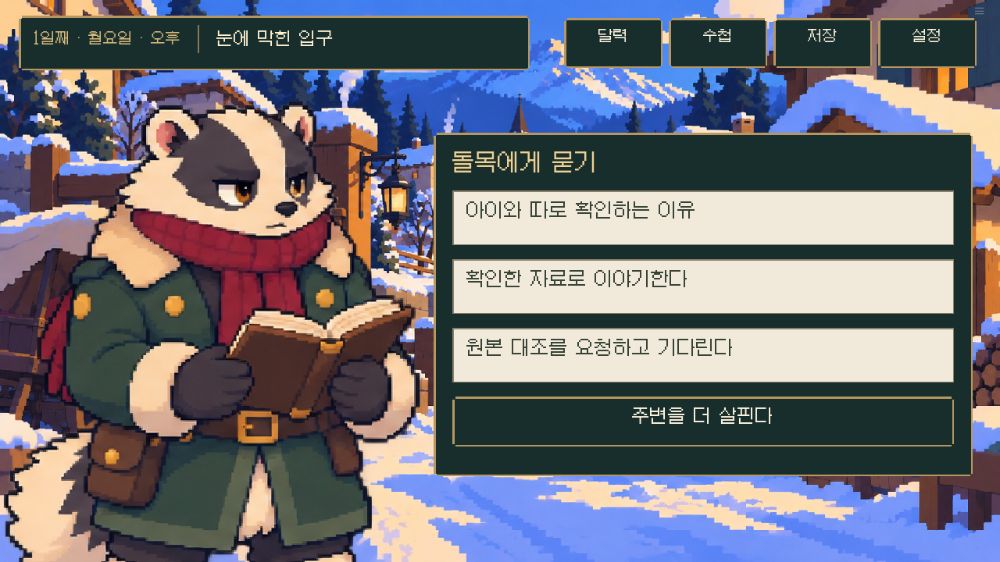

B안으로 통일한 다람탐정의 배경·인물·사건 장면입니다. 그림을 따로 보고, 시간대와 표정을 바꿔 비교할 수 있습니다.
도트 버전 게임 시작하기 ↗
전체 도트 원화 받기 · ZIP · 스포일러 포함
아래는 원화 갤러리입니다. 게임의 대사·조사 조작·애니메이션은 이 페이지에 포함되지 않습니다.



오전의 푸른 눈, 오후의 햇빛, 저녁의 등불. 같은 장소와 사건 전후의 구조를 함께 확인하세요.
주요 인물 12명은 네 가지 표정을 바꿔 볼 수 있습니다. 다른 주민 31명은 기본 표정 한 장이며, 없는 표정을 별도 그림처럼 표시하지 않습니다.
사건 장면 5개와 엔딩 7개. 범행과 결말의 단서가 포함되어 있어 처음에는 가려 두었습니다.